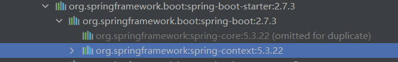
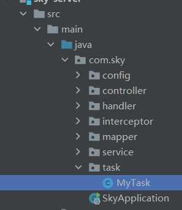
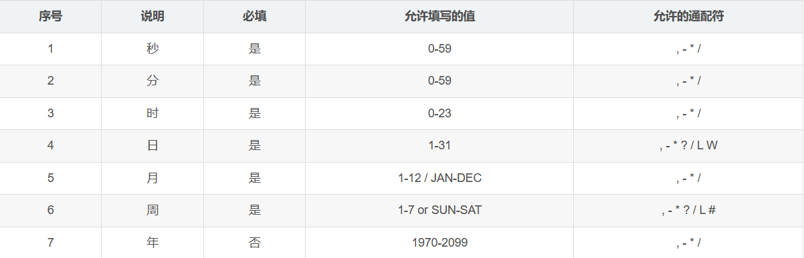
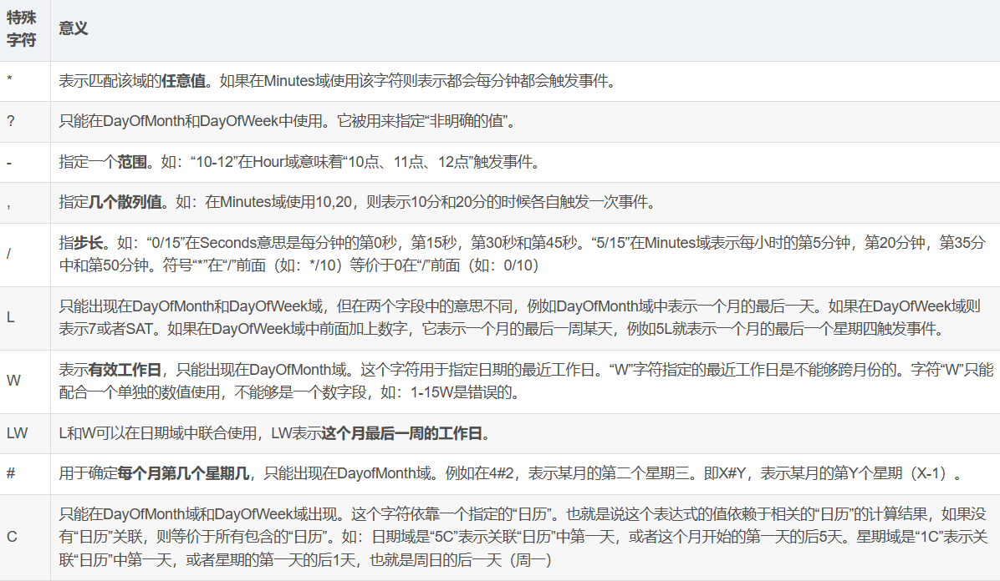

SpringTask
Spring Task用于执行一些定时任务，这里是一个基本的入门案例，使用注解配置的方式来完成定时执行。
1.导入依赖
spring-boot-starter 中的 spring-context 中已包含了Spring Task，一般情况下无需额外导入依赖。
2.开启任务调度
在SpringBoot的启动类上添加注解 @EnableScheduling.
3.自定义定时任务类
在项目中新建一个task包，专门放定时任务类
类上加**@Component注解，方法上加@Scheduled**注解
最常用的是@Scheduled中 cron 属性，为cron属性赋值 cron表达式以设置具体的定时时间
例如下面这条表达式代表着 每5秒执行一次任务
1 | import lombok.extern.slf4j.Slf4j; |
4.Cron表达式
cron表达式是一个字符串，字符串以5或6个空格隔开，分开共6或7个域，每一个域代表一个含义。
注意 ：Spring Task的cron表达式只能包含6个字段，即不支持支持年份，使用7个字段会报错
cron表达式语法
 [秒] [分] [小时] [日] [月] [周] [年]
举例
0 0 2 1 * ? * 表示在每月的1日的凌晨2点调整任务
0 15 10 ? * MON-FRI 表示周一到周五每天上午10:15执行作业
0 15 10 ? 6L 2002-2006 表示2002-2006年的每个月的最后一个星期五上午10:15执行作
0 0 10,14,16 * * ? 每天上午10点，下午2点，4点
0 0/30 9-17 * * ? 朝九晚五工作时间内每半小时
0 0 12 ? * WED 表示每个星期三中午12点
0 0 12 * * ? 每天中午12点触发
0 15 10 ? * * 每天上午10:15触发
0 15 10 * * ? 每天上午10:15触发
0 15 10 * * ? * 每天上午10:15触发
0 15 10 * * ? 2005 2005年的每天上午10:15触发
0 * 14 * * ? 在每天下午2点到下午2:59期间的每1分钟触发
0 0/5 14 * * ? 在每天下午2点到下午2:55期间的每5分钟触发
0 0/5 14,18 * * ? 在每天下午2点到2:55期间和下午6点到6:55期间的每5分钟触发
0 0-5 14 * * ? 在每天下午2点到下午2:05期间的每1分钟触发
0 10,44 14 ? 3 WED 每年三月的星期三的下午2:10和2:44触发
0 15 10 ? * MON-FRI 周一至周五的上午10:15触发
0 15 10 15 * ? 每月15日上午10:15触发
0 15 10 L * ? 每月最后一日的上午10:15触发
0 15 10 ? * 6L 每月的最后一个星期五上午10:15触发
0 15 10 ? * 6L 2002-2005 2002年至2005年的每月的最后一个星期五上午10:15触发
0 15 10 ? * 6#3 每月的第三个星期五上午10:15触发
0 0 3 1 * ? 每月月初3点
在线生成工具
一般不需要刻意去记住怎么写，利用在线生成工具可以提高效率：